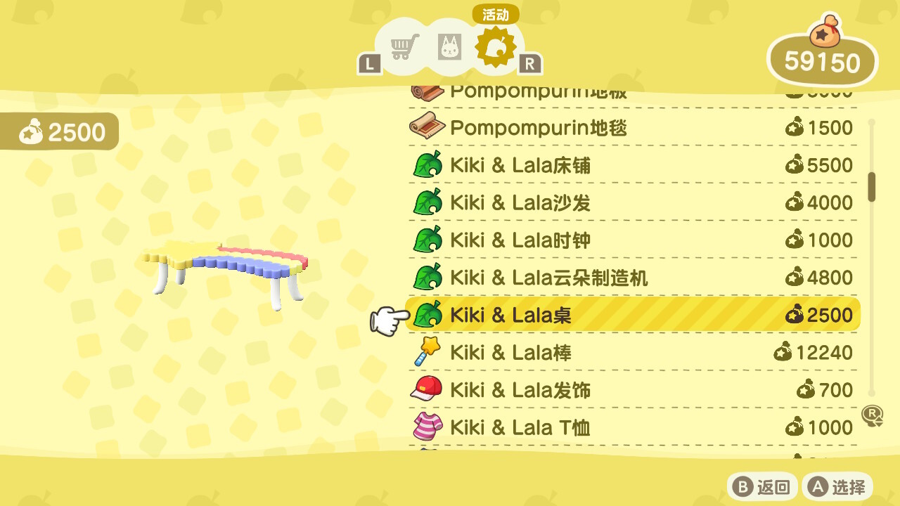

Some Fun Items
Kiki Lala Table
The Kiki & Lala table is a houseware furniture item in Animal Crossing: New Horizons introduced in the 1.9.0 Free Update. It is part of the Kiki & Lala Series. The item's top surface can be used to place smaller items, such as miscellaneous furniture. The Kiki & Lala table can be obtained from Nook Shopping, after scanning Étoile's amiibo card in Photopia for 2,500 Bells. This item appears as a furniture item in the homes of Étoile. As a result, this item has a chance to be purchasable by the player if they were invited by any of the preceding villagers.
Kiki Lala Sofa
The Kiki & Lala sofa is a houseware furniture item in Animal Crossing: New Horizons introduced in the 1.9.0 Free Update. It is part of the Kiki & Lala Series. The player is able to sit on this item. The Kiki & Lala sofa can be obtained from Nook Shopping, after scanning Étoile's amiibo card in Photopia for 4,000 Bells. This item appears as a furniture item in the homes of Étoile. As a result, this item has a chance to be purchasable by the player if they were invited by any of the preceding villagers.
Kiki Lala Cloud Maker
The Kiki & Lala cloud maker is a houseware furniture item in Animal Crossing: New Horizons introduced in the 1.9.0 Free Update. It is part of the Kiki & Lala Series. The item can be interacted with to produce cloud-like particles. The Kiki & Lala cloud maker can be obtained from Nook Shopping, after scanning Étoile's amiibo card in Photopia for 4,800 Bells. This item appears as a furniture item in the homes of Étoile. As a result, this item has a chance to be purchasable by the player if they were invited by any of the preceding villagers.
Kiki Lala Bed
The Kiki & Lala bed is a houseware furniture item in Animal Crossing: New Horizons introduced in the 1.9.0 Free Update. It is part of the Kiki & Lala Series. The player is able to lie down on this item. If inside the player's house, the player can use the Kiki & Lala bed to enter a dream island by laying down and choosing to go to sleep. The Kiki & Lala bed can be obtained from Nook Shopping, after scanning Étoile's amiibo card in Photopia for 5,500 Bells. This item appears as a furniture item in the homes of Étoile. As a result, this item has a chance to be purchasable by the player if they were invited by any of the preceding villagers.